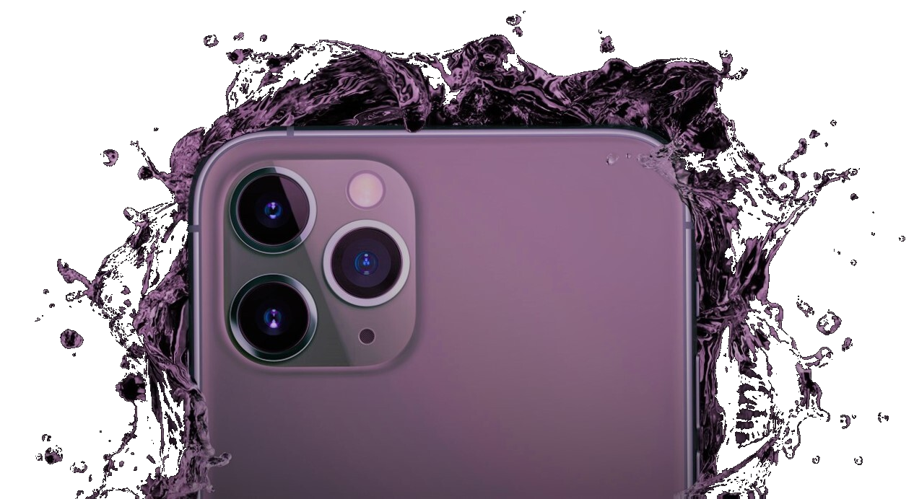

U bent vanzelfsprekend op deze website terecht gekomen, wat nu?
Het idee van deze website is om u allerlei dingen te vertellen over de processor.
Het idee is om uw kennis te vergroten over hoe een PC werkt, en in het specifiek de processor. Dit kleine stukje metaal bestuurd vrijwel het gehele apparaat, maar hoe?
Dit wilen wij proberen duidelijk te maken door verschillende aspecten van de CPU's uit te leggen, hieronder staat alles waar we het over gaan hebben:
Doorzoek alles en leer wat!
'Deze?..of toch die?'
Er zijn veel CPU's. Heel veel.
Dus waar moet je nou naar kijken?
De grote? Het gewicht? Hier wordt u misschien wat wijzer.
Tegenwoordig zit in vrijwel elk apparaat een processor (CPU).
Auto's, vliegtuigen, beeldschermen en nog veel meer bevatten er een.
Ze zitten dus overal, en daarom vinden wij dat jullie geïnformeerd moeten zijn hierover.
Hello World!
Vanaf de komst van de computers zaten hier al CPU's in.
Deze computers waren echter wel de grote van een kamer!
Om al deze ontwikkelingen te zien in computers door de jaren heen,
hebben wij onder andere een speciaal tabblad over dit onderwerp!
Joshua
Dale
Per